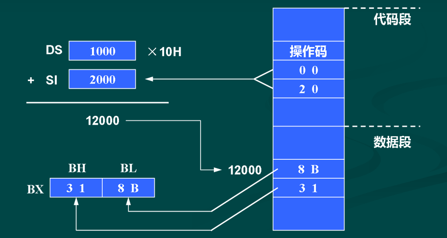

指令（Instruction）
- 计算机的指令，通常包含操作码（Opcode）和操作数（Operand）两部分，操作码指出操作的性质，操作数给出操作的对象。
- 寻址方式就是指令中说明操作数所在地址的方法。
- 指令有单操作数、双操作数和无操作数之分。如果是双操作数，要用逗号分开，右边的为源操作数，左边的为目的操作数。
8086的寻址方式有以下几种：
- 立即数寻址：可直接从指令队列中取数，指令执行速度较快；
- 寄存器寻址：操作数在寄存器中，执行速度最快；
- 存储器寻址：操作数在存储器中，又分几种形式，执行速度较慢；
- 其它寻址：如隐含寻址、I/O端口寻址、转移类指令寻址
1. 立即数寻址方式
Immediate Addressing：操作数直接包含在指令中，它是一个8位或16位的常数，也叫立即数。

- 立即数可以送到寄存器中，还可送到一个存储单元(8位)中或两个连续的存储单元(16位)中去。
- 立即数只能作源操作数，不能作目的操作数。
- 以A~F打头的16进制数字出现在指令中时，前面一定要加一个数字0。
例如，将FF00H送到AX的指令必须写成：MOV AX，0FF00H
2. 寄存器寻址方式
Register Addressing：操作数包含在寄存器中，由指令指定寄存器的名称。
- 16位寄存器可以是 ：
AX、BX、CX、DX、SI、DI、SP、BP - 8位寄存器为：
AH、AL、BH、BL、CH、CL、DH、DL
例如：MOV DX，AX
设指令执行前 AX=3A68H，DX=18C7H
则指令执行后 DX=3A68H，AX=3A68H (保持不变)
MOV CL，AH
将AH中的8位数据传送到CL寄存器。
注意：源操作数的长度必须与目的操作数一致，否则会出错。
MOV CX，AH
是错误的。虽然CX放得下AH中的8位数据，但汇编程序不知道应该将它放入CH还是CL。
3. 直接寻址方式
- Direct Addressing
- 操作数的偏移地址也称为
有效地址EA（Effective Address）。 - 在直接寻址方式下，存储单元的有效地址直接由指令给出，默认使用的段寄存器为
数据段寄存器DS。 - 操作数的物理地址 =
16×DS+EA
MOV AX，［2000H］
- 指令中直接给出有效地址EA，这里EA=2000H，必须加[ ]，表示不是立即数。
- 设DS=3000H，则源操作数的物理地址=
16×3000H+2000H=32000H - 因目的操作数是16位寄存器AX，所以将存储单元中的一个字送进AX。
- 若（32000H）＝34H，（32001H）＝12H，则执行指令后，AX=1234H。

MOV AL，［2000H］
假设条件相同，指令执行后将32000H单元中的字节送到AL，结果使AL=34H。
- 段超越前缀
- 如果要对代码段、堆栈段或附加段寄存器所指出的存储区进行直接寻址，应在指令中指定段超越前缀。
- 数据若放在附加段中，则应在有效地址前加说明符“ES：”，计算物理地址时要用ES作基地址，而不是默认值DS。
MOV AX，ES：［500H］
该指令的源操作数的物理地址=16×ES+500H。
- 符号地址
- 允许用符号地址代替数值地址，也就是给存储单元起一个名字，如AREA1，寻址时只要使用其名字，不必记住具体数值。
MOV AX，AREA1
指令执行后，将从有效地址为AREA1的存储单元中取出一个字送到AX中去。
程序中事先应用说明语句也叫做伪指令来加以说明。
AREA1 DW 0867H
…
MOV AX， AREA1这里的DW伪指令语句用来定义变量。MOV指令执行后将AREA1单元中内容送到AX，结果AX=0867H。
4. 寄存器间接寻址方式
Register Indirect Addressing：
- 指令中给出的寄存器中的值不是操作数本身，而是操作数的
有效地址EA。 - 寄存器名称外必须加方括号，可用的寄存器有：BX、BP、SI、DI。
约定1：如果指令中指定的寄存器是BX、SI或DI，则默认操作数存放在数据段中，
物理地址=16×DS+BX
或=16×DS+SI
或=16×DS+DI
MOV BX，［SI］
设DS=1000H，SI=2000H，(12000H)=318BH，则：
物理地址 = 16×DS+SI = 10000H+2000H = 12000H
指令执行后，BX = 318BH。

约定2：如果指令中用BP进行间接寻址，则默认操作数在堆栈段中。例如：
MOV AX，［BP］ ；操作数的物理地址
；=16×SS+BP指令中也可以指定段超越前缀。例如：
MOV BX，DS：［BP］ ；源操作数物理地址
；=16×DS+BP
MOV AX，ES：［SI］ ；源操作数物理地址
；=16×ES+SI5. 寄存器相对寻址方式
Register Relative Addressing：
- 它与寄存器间接寻址十分相似，但在有效地址上还要加一个8/16位的位移量。
MOV BX，COUNT［SI］
设 DS=3000H，SI=2000H，位移量 COUNT=4000H，(36000H)=5678H，则：
物理地址=16×DS+SI+COUNT
=30000H+2000H+4000H
=36000H
执行结果 BX=5678H

上述指令也可用MOV BX，［COUNT+SI]这种形式来表示。
6. 基址变址寻址方式
Based Indexed Addressing：
- 有效地址是一个基址寄存器(BX或BP)和一个变址寄存器(SI或DI)的内容之和，两个寄存器均由指令指定。
- 若基址寄存器为BX时，段址寄存器用DS，则：物理地址 =
16×DS+BX+SI或 =16×DS+BX+DI - 若基址寄存器为BP时，段址寄存器应使用SS，则：物理地址 =
16×SS+BP+SI或 =16×SS+BP+DI
MOV AX，［BX］［SI］
设 DS=3000H，BX=1200H，SI=0500H， (31700H)=ABCDH，则：
物理地址 = 16×DS+BX+SI
= 30000H+1200H+0500H
= 31700H
执行结果：AX=ABCDH
7. 相对基址变址寻址方式
Relative Based Indexed Addressing：
- 有效地址是基址和变址寄存器的内容，再加上8/16位位移量之和。
- 当基址寄存器为BX时，用DS作段寄存器，则：物理地址 =
16×DS+BX+SI+8位或16位位移量或 =16×DS+BX+DI+8位或16位位移量
当基址寄存器为BP时，应使用SS作段寄存器，则：物理地址 =16×SS+BP+SI+8位或16位位移量或 =16×SS+BP+DI+8位或16位位移量
MOV AX，MASK［BX］［SI］
设DS=2000H，BX=1500H，SI=0300H，MASK=0200H, (21A00H)=26BFH，则：
物理地址=16×DS+BX+SI+MASK
=20000H+1500H+0300H+0200H
=21A00H
执行结果：AX=26BFH
涉及操作数的地址时，常使用方括号，带[ ]的地址必须遵循下列规则：
- 立即数可以出现在方括号内，表示直接地址，例如［2000H］。
- 只有
BX、BP、SI、DI可以出现在［］内，既可单独出现，也可几个寄存器组合(只能相加)，或寄存器与常数相加，但BX和BP不允许出现在同个［］内，SI和DI也不能同时出现。 - 方括号有相加的含义，故下面几种写法是等价的：
6［BX］［SI］ / ［BX+6］［SI］ / ［BX+SI+6］ - 若[ ]内包含BP，则隐含使用SS提供基地址，它们的物理地址=16×SS+EA。
包含BP的操作数有3种形式：
DISP［BP+SI］ ；EA=BP+SI+DISP
DISP［BP+DI］ ；EA=BP+DI+DISP
DISP［BP］ ；EA=BP+DISP其中，DISP表示8位或16位位移量，也可以为0。
这种情况下，也允许用段超越前缀将SS修改为CS、DS或ES中的一个，计算物理地址时，应将上式中的SS改为相应的段寄存器。
其余情况均隐含使用DS提供基地址，它们的物理地址计算方法：物理地址=16×DS+EA
这类操作数可以有以下几种形式：
［DISP］ ；EA=DISP
DISP［BX+SI］ ；EA=BX+SI+DISP
DISP［BX+DI］ ；EA=BX+DI+DISP
DISP［BX］ ；EA=BX+DISP
DISP［SI］ ；EA=SI+DISP
DISP［DI］ ；EA=DI+DISP同样，也可用段超越前缀将式中的DS修改为CS、ES或SS中的一个。
8. 其它寻址方式
- 隐含寻址：指令中不指明操作数，但具有隐含规定的寻址方式。
DAA ；它对AL中的数据进行十进制
；调整，结果仍保留在AL中。- I/O端口寻址：8086有直接端口和间接端口两种寻址方式：
- 直接端口寻址方式：端口地址由指令直接提供，它是一个8位立即数n= 00 ~ FFH。
IN AL，63H ; AL←端口63H中的内容 - 间接端口寻址方式：被寻址的端口号由寄存器DX提供，端口号=0000~ FFFFH。
MOV DX，213H ；DX=口地址号213H
IN AL，DX ；AL←端口213H中的内容3．一条指令有几种寻址方式
- 上述寻址方式都针对源操作数。
- 目的操作数也可用除了立即寻址方式之外的所有寻址方式指定，所以一条指令可以有几种寻址方式。
MOV ［BX］，AL
这里，源操作数为寄存器，目的操作数为寄存器相对寻址方式。
4．转移类指令寻址：将在本章后面讨论控制转移指令时介绍。